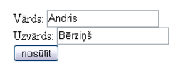
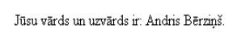

<body>
<h1><?php echo 'Sveiciens!'; ?></h1>
</body>
<body>
<h1>Sveiciens!</h1>
</body>
<?php
// C++ stila vienas rindas komentārs
echo 'Šis teksts tiek izvadīts'; // bet šo interpretators ignorē
/* bloka komentārs,
kas uzrakstīts pa
vairākām rindām */
?>
$mainigais $ShisIr1MainigaisArCiparu $_mainigais_ar_zemsvitru
$1mainigais_ar_ciparu_sakuma $mainigais-ar-neatlautiem-simboliem
$a = 1234; // decimāls skaitlis $a = -123; // a negatīvs skaitlis $a = 0123; // octāls skaitlis (vienāds ar 83 decimālajā sistēmā) $a = 0x1A; // hexadecimāls skaitlis (26 – decimālajā sistēmā)
$a = 1.234; $b = 1.2e3; $c = 7E-10;
$summa = 1 + 2; //mainīgā vērtība: 3 $starpiba = 1 – 2; //vērtība: -1 $reizinajums = 1 * 2; //vērtība: 2 $dalijums = 1 / 2; //vērtība: 0.5 $modulis = 1 % 2; //vērtība: 1
$a++; //palielina $a vērtību par 1 $a--; //samazina $a vērtību par 1 $a += $b; //dara to pašu ko $a = $a + $b $a -= $b; //dara to pašu ko $a = $a - $b $a *= $b; //dara to pašu ko $a = $a * $b $a /= $b; //dara to pašu ko $a = $a / $b $a %= $b; //dara to pašu ko $a = $a % $b
$navPatiesiba = false; $navPatiesiba = 0; //nulle ir līdzvērtīga False; $irPatiesiba = true; $irPatiesiba = 1; //jebkurš cipars, kas atšķiras no 0, tai skaitā //negatīvs tiek uztverts kā TRUE
| Operators | Pielietojums | Apraksts |
| && | $a && $b | “un” operators atgriež vērtību true, ja $a un $b abi ir true |
| || | $a || $b | “vai” atgriež true, ja vismaz viens no mainīgajiem ir true |
| xor | $a xor $b | “xor” atgriež true, ja tikai viens no mainīgajiem ir true, bet otrs false |
| Operators | Pielietojums | Apraksts |
| ! | ! $a | “ne” atgriež pretējo vērtību, ja $a ir true, tad ! $a ir false, un otrādi |
$rej = true; //dzīvnieks rej $njaud = false; //dzīvnieks ņaud $irMajdzivnieks = $rej || $njaud; //vērtība: true //Ja dzīvnieks ņaud vai rej, tad tas ir mājdzīvnieks. $irSuns = $irMajdzivnieks && $rej; //vērtība: true //Ja dzīvnieks ir majdzivnieks un tas rej, tad tas ir suns.
$irMezaZvers = ! $irMajdzivnieks; //vērtība: false //Ja dzīvnieks nav mājdzivnieks, tad tas ir meža zvērs. //Šajā gadījumā tas ir mājdzīvnieks, tādēļ $mezaZvers ir nepatiess. $navKluda = $irMezaZvers xor $irMajdzivnieks //vērtība: true //Dzīvnieks var būt tikai meža vai tikai māju, citādi sistēmā ir //ieviesusies kļūda.
$s = 'simbolu virkne'; //vērtība: simbolu virkne
$s = 'satur (\') apostrofu'; //vērtība: satur (') apostrofu
$s = 'ar slīpsvītru\\'; //vērtība: ar slīpsvītru\
$s = 'ar \ slīpsvītru'; //vērtība: ar \ slīpsvītru
$s = 'ar \\ slīpsvītru'; //vērtība: ar \ slīpsvītru
$s = '\\\\ 2 slīpsvītras!'; //vērtība: \\ 2 slīpsvītras
$s = 'kļūda ar slīpsvītru\'; //kļuda: syntax error, unexpected T_STRING
$s = 'kļūda ar ' apostrofu'; //kļuda: syntax error, unexpected T_STRING
| Simboli | Apraksts |
| \n | Linefeed (LF) pārnes tekstu jaunā rindā - Unix un Windows OS |
| \r | Carriage return (CR) pārnes tekstu jaunā rindā – Mac un Windows OS |
| \t | Tabulēšanas simbols |
| \\ | Slīpsvītra '\' |
| Simboli | Apraksts |
| \$ | Dolāra zīme '$' |
| \" | Pēdiņas '"' |
| \[0-7]{1,3} | Oktāls skaitlis, kas norāda attēlojamā simbola kodu (\101 = A) |
| \x[0-9A-Fa-f]{1,2} | Heksadecimāls skaitlis, kas norāda attēlojamā simbola kodu (\x41 = A) |
$a = "pasaule"; $s = "Sveika $a!"; //vērtība: Sveika pasaule! $s = "100\$"; //vērtība: 100$ $s = "\x41\x42\x43"; //vērtība: ABC
$a = "pasaule!"; $s = "Sveika" . $a; //vērtība: Sveika pasaule!
1 == 1; //vērtība: true $a = "abc"; // NAV SALĪDZINĀŠANA!!! $a == "abc"; //vērtība: true $a != "abc"; //vērtība: false 3 < 2.9; //vērtība: false 10 >= 10; //vērtība: true
"5" == 5; //vērtība: true "5abc" == 5 //vērtība: true //teksta virknes sākumā ir simbols 5 kuru PHP pārveido par skaitli "4" === 4; //vērtība: false "3" !== 3; //vērtība: true
$a == null; //vērtība: true //Mainīgajam $a vēl nav piešķirta vērtība tādēļ $a == null ir patiess $a == 0; //vērtība: false $a = "Labvakar!"; //vērtība: Labvakar! $a = null; //no mainīgā $a tika izdzēsta vērtība
array( [atslēga =>] vērtība
, ...
)
[ [atslēga =>] vērtība
, ...
]
//vērtības var pievienot masīvam jau tā izveidošanas brīdī
$arr = array("vards" => "Jānis", 40 => 123); // pilnā sintakse
$arr = ["vards" => "Jānis", 40 => 123]; // īsā sintakse
$a = $arr["vards"]; //vērtība: Jānis
$a = $arr[40]; //vērtība: 123
//var izveidot arī tukšu masīvu un pievienot tam vērtības vēlāk
$arr2 = array(); // pilnā sintakse
$arr2 = []; // īsā sintakse
$arr2["vards"] = "Kaspars";
//var pievienot jaunu masīvu, kā vērtību
//(veidot 2 un vairāk dimensiju masīvu)
$arr["mans_masivs"] = array("atslega1" => "vertiba1");
//tad vērtībai var piekļūt sekojoši
$a = $arr["mans_masivs"]["atslega1"]; //Rezultāts: vertiba1
$arr = array("ābols", 4 => "banāns", "apelsīns");
$a = $arr[0]; //vērtība: ābols
$a = $arr[1]; //masīva elementam nav vērtības - $arr[1] == null
$a = $arr[4]; //vērtība: banāns
$a = $arr[5]; //vērtība: apelsīns
$a = "Mans mainīgais"; $b = "a"; echo $$b; //Rezultāts: Mans mainīgais
$a = "Mans mainīgais"; $b = &$a; echo $b; //Rezultāts: Mans mainīgais $a = "Jauna vērtība"; echo $b; //Rezultāts: Jauna vērtība
if (nosacījums) {
komandu_bloks;
}
[ else {
alternatīvais_komandu_bloks;
} ]
$a = 2;
$b = 0;
if ($a > $b){
echo "a ir lielāks par b";
$a++;
$b--;
}
//Rezultāts: a ir lielāks par b
$a = 5;
if ($a < 10){
echo "a ir mazāks par 10 \n";
} else {
echo "a ir lielāks vai vienāds ar 10 \n";
}
//Rezultāts: a ir mazāks par 10
$a = 10;
if ($a < 10){
echo "a ir mazāks par 10 \n";
} else if ($a > 10) {
echo "a ir lielāks par 10 \n";
} else {
echo "a ir vienāds ar 10 \n";
}
//Rezultāts: a ir vienāds ar 10
switch(izteiksme){
case vērtība_1:
komandu_bloks_1;
break;
case vērtība_2:
komandu_bloks_2;
break;
default:
komandas_ja_izteiksmes_vērtība_nesakrīt_ar_iepriekš_pārbaudītajām;
}
$a = "qwerty";
switch($a){
case "abc":
echo "Ābece";
break;
case "vzž":
echo "Pēdējie alfabēta burti!";
break;
default:
echo "Cits teksts";
}
//Rezultāts: Cits teksts
$a = 5; $b = ( $a>5 ? $a+100 : '$a nav lielāks par 5' ); echo $b; //Rezultāts: $a nav lielāks par 5
while(nosacījums){
komandu_bloks;
}
$atzime = 5;
while($atzime < 10) {
// kamer atzime mazāka par 10 – mācamies
$a = $a + 1;
}
echo $a;
//Rezultāts: 10
do {
komandu_bloks;
} while (nosacījums);
$a = 1;
do {
$a++;
} while ($a < 1);
echo $a;
//Rezultāts: 2
for (cikla_inicializēšanas_izteiksme; nosacījums; soļa_izteiksme){
komandu_bloks;
}
$pakapienuSkaits = 4;
for($pakapiens = 0; $pakapiens < $pakapienuSkaits; $pakapiens++){
echo "Esmu uz $pakapiens pakāpiena
\n";
}
echo "Esmu augšā! Tagad lekšu ik pa 2 pakāpieniem lejā!
\n";
for($pakapiens = $pakapienuSkaits; $pakapiens > 0; $pakapiens -= 2){
echo "Esmu uz $pakapiens pakāpiena
\n";
}
Esmu uz 0 pakāpiena
Esmu uz 1 pakāpiena
Esmu uz 2 pakāpiena
Esmu uz 3 pakāpiena
Esmu augšā! Tagad lekšu ik pa 2 pakāpieniem lejā!
Esmu uz 4 pakāpiena
Esmu uz 2 pakāpiena
foreach (masiva_mainigais as indeksa_mainigais => vertibas_mainigais) {
komandu_bloks;
}
$atzimes = array(
"Jānis" => 6,
"Ilze" => 7,
"Pēteris" => 8,
"Anna" => 9
);
foreach ($atzimes as $students => $atzime){
$atzimes[$students] = $atzime+1;
echo "Palielināju atzīmi par viens studentam ".$students."
\n";
}
echo $atzimes["Jānis"]."
\n";
Palielināju atzīmi par viens studentam Jānis
Palielināju atzīmi par viens studentam Ilze
Palielināju atzīmi par viens studentam Pēteris
Palielināju atzīmi par viens studentam Anna
$skaititajs = 0;
while (true) { // šis mūžīgais cikls, jo nosacījums vienmēr ir patiess
if ($skaititajs > 9) {
break;
} else {
$skaititajs++;
}
}
echo $skaititajs; //Rezultats: 10
for ($i = 0; $i < 10; $i++) {
// Ja $i vertiba ir nepara skaitlis, izlaižam soli
if ($i % 2 == 1) {
continue;
}
// Nākamā rinda tiek izpildīta tikai tad ja $i ir pāra vērtība
echo $i." ";
}
// Rezultāts: 0 2 4 6 8
function funkcijas_nosaukums([arguments [, arguments ...]]) {
komandu_bloks;
}
// funkcijas definēšana
function sveiki() {
echo "Sveika pasaule!
\n";
}
// funkcijas izmantošana
sveiki();
sveiki();
/*Rezultāts:
Sveika pasaule!
Sveika pasaule!
*/
function kvadrats($x) {
return $x * $x;
}
$divi_kvadraataa = kvadrats(2);
echo $divi_kvadraataa;
// Rezultāts: 4
// Funkcija strādā korekti, ja kāpinātājs ir vesels, nenegatīvs skaitlis
function pakape($baze, $kapinatajs) {
$pakape = 1;
for ($i = 0; $i<$kapinatajs; $i++) {
$pakape *= $baze;
}
return $pakape;
}
echo pakape(2,3);
// Rezultāts: 8
$g = 5; // globāls mainīgais
function f() {
global $g; // globālais mainīgais tiek ieimportēts funkcijā
$l = $g; // lokālajam mainīgam $l piešķir $g vērtību
$g++;
}
echo $g; // Rezultāts: 5
f();
echo $g; //Rezultāts: 6
$g = 5
function fKluda() {
echo $g;
}
fKluda(); // netiek izvadīts nekas, jo nav ieimportēts $g;
function dinSveiks() {
echo "Dinamisks sveiciens pasaulei!";
}
function dinSveiks2($txt) {
echo "Saku pasaulei: $txt !";
}
$manaFunc = "dinSveiks";
$manaFunc(); // Rezultāts: Dinamisks sveiciens pasaulei!
$manaFunc = "dinSveiks2";
$manaFunc("Čau"); // Rezultāts: Saku pasaulei: Čau !
class klases_nosaukums{
[atribūti]
[konstruktors un/vai destruktors]
[funkcijas]
}
class Durvis{
/* Atribūti nosaka ar kādām īpašām objekts tiks raksturots */
public $materials;
public $krasa;
public $stavoklis;
// koks, plastmasa, metāls, ...
// balts, zils, zaļš, ...
// atvērtas, aizvērtas
...
}
class Durvis{
...
/*kontruktors inicializē objekta atribūtus, kad tas tiek veidots */
public function __construct($materials){
$this->materials = $materials;
$this->stavoklis = 'aizvertas';
}
...
}
?>
class Durvis{
...
/* funkcijas apraksta kādas darbības iespējams veikt ar objektu */
public function krasot($krasa){
$this->krasa = $krasa;
}
...
}
class Durvis{
...
public function vert(){
if ($this->stavoklis == 'atvertas'){
$this->stavoklis = 'aizvertas';
}else{
$this->stavoklis = 'atvertas';
}
}
...
}
class Durvis{
...
public function aprakstit(){
echo "Materiāls: $this->materials
\n";
echo "Krāsa: $this->krasa
\n";
echo "Stāvoklis: $this->stavoklis
\n";
}
...
}
class Durvis{
...
}
// Izveido jaunas durvis (izsauc konstruktoru)
$manasDurvis = new Durvis('metals');
// Veicam darbības ar jaunizveidotajām durvīma
$manasDurvis->krasot('balts');
$manasDurvis->aprakstit();
$manasDurvis->vert();
$manasDurvis->aprakstit();
Materiāls: metals
Krāsa: balts
Stāvoklis: aizvertasMateriāls: metals
Krāsa: balts
Stāvoklis: atvertas
class PaplasinataKlase extends ManaKlase{
//pārdefinējam vecāka klases metodi
public function izvaditMainigo(){
parent::izvaditMainigo();
echo ' no paplašinātās klases';
}
$mansObjekts = new PaplasinataKlase('vērtība');
$mansObjekts->izvaditMainigo();
//Rezultāts: vērtība no paplašinātās klases
}
Atslēgas vārds parent ļauj izsaukt metodes vai atribūtus no vecāka klases.
function dalijums($skaititajs, $saucejs){
if($saucejs ==0 ){
throw new Exception("Dalīt ar 0 nevar!");
}else{
return $skaititajs / $saucejs;
}
}
try{
$a = dalijums($skait,$sauc);
echo "$skait / $sauc = $a";
}catch(Exception $e){
echo $e->getMessage();
}
// Rezultāts: Dalīt ar 0 nevar!
$_GET, kas satur visus mainīgos, kas tikuši padoti skriptam izmantojot URL.
//skripts dalijums.php echo $_GET['skaititajs'] / $_GET['saucejs']; // Rezultāts: 3
echo $_GET['persona']['vards'].' '.$_GET['persona']['uzvards']; // Rezultāts: Janis Osis

echo '
Jūsu vārds un uzvārds ir: '; echo $_POST['persona']['vards'].' '.$_POST['persona']['uzvards'].'.';
<?php
class Summetajs{
public $skaitli;
public function summet(){
$summa = 0;
foreach($this->skaitli as $skaitlis){
$summa += $skaitlis;
}
return $summa;
}
} ?>
<html><body>Rezultāts
<?php require_once 'summetajs.php'; $sum = new Summetajs(); $sum->skaitli = array(1,2,3); // 1+2+3 = 6 echo $sum->summet(); ?> </p> </body></html>